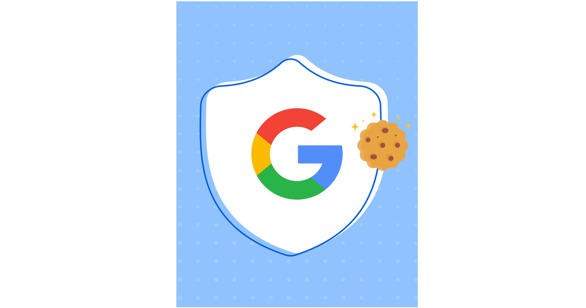

Кратък отговор: Google Consent Mode v2 е начинът, по който сайтът ви казва на таговете на Google (Google Ads, GA4) какво е избрал всеки посетител в банера за бисквитки. За бизнесите, които рекламират на потребители в Европейското икономическо пространство, Google изисква тези сигнали, за да могат да продължат да използват функции като ремаркетинг аудитории и персонализирана реклама. Без тях рекламите и отчетите ви губят данни.
Основни изводи
- Consent Mode v2 изпраща четири сигнала:
ad_storage,analytics_storage,ad_user_dataиad_personalization. - Последните два са добавени във версия 2 и точно те липсват в много по-стари настройки.
- Самият банер за бисквитки не е достатъчен — той трябва да предава избора на посетителя към таговете на Google.
- Consent Mode не замества съгласието. Той спазва избора на посетителя и променя поведението на таговете на Google.
Какво е Google Consent Mode?
Consent Mode е функция на Google, която свързва банера за бисквитки (Consent Management Platform, CMP) с тагове като Google Ads, GA4 и Floodlight. Когато посетителят приеме или откаже бисквитките, Consent Mode предава избора към таговете и те променят поведението си.
Какво се промени във версия 2?
Версия 1 използваше два сигнала: ad_storage (могат ли да се записват рекламни бисквитки?) и analytics_storage (могат ли да се записват аналитични бисквитки?).
Версия 2 добави още два:
ad_user_data— могат ли потребителските данни да се изпращат към Google за рекламни цели?ad_personalization— могат ли данните да се използват за персонализирана реклама, например ремаркетинг?
Google ги въведе във връзка с Акта за цифровите пазари на ЕС и ги изисква за трафика от ЕИП от март 2024 г.
Кой има нужда от Consent Mode v2?
Всеки бизнес, който използва Google Ads или GA4 и има посетители от Европейското икономическо пространство — тоест всеки бизнес в България. Ако сигналите липсват, Google ограничава функции като ремаркетинг списъци и измерване на конверсии за тези потребители.
Basic или Advanced Consent Mode: каква е разликата?
- Basic режим: таговете на Google не се зареждат изобщо, докато посетителят не даде съгласие. Ако откаже, Google не получава нищо от това посещение.
- Advanced режим: таговете се зареждат веднага, със съгласие „отказано" по подразбиране. Ако посетителят откаже, таговете изпращат ограничени сигнали без бисквитки и без идентификатори. Google ги използва, за да моделира конверсии, които не може да види директно.
Advanced режимът обикновено възстановява повече данни за измерване. Basic е по-консервативният избор. Кой е правилният зависи от правната ви преценка — обсъдете го с юрист или специалист по защита на данните.
Как да проверите дали Consent Mode v2 работи на сайта ви
- Отворете сайта в инкогнито прозорец. Банерът трябва да се появи преди да се заредят маркетинговите тагове.
- Използвайте Google Tag Assistant (tagassistant.google.com). Свържете сайта и отворете раздела Consent. Проверете дали състоянието по подразбиране е зададено преди избора в банера и дали и четирите сигнала се променят, след като приемете или откажете.
- Тествайте и двата избора. Веднъж приемете всичко, веднъж откажете всичко. Четирите сигнала трябва да се променят съответно.
- Проверете Google Ads. В Цели → Конверсии Google показва диагностика за действията за конверсия, включително дали получава сигнали за съгласие.
- Проверете GA4. В раздела Admin GA4 показва статуса на настройките за съгласие за ресурса ви.
Ако някой от четирите сигнала липсва или състоянието по подразбиране не е зададено преди банера, настройката трябва да се поправи.
Как се настройва
Най-честият и надежден начин:
- Използвайте сертифицирана от Google CMP (инструмент за банер за бисквитки). Google поддържа списък със сертифицирани партньори; в него са много популярни инструменти като Cookiebot, CookieYes и Usercentrics. Проверете актуалния списък, преди да изберете.
- Свържете CMP с Google Tag Manager чрез официалния шаблон.
- Задайте състояния по подразбиране за четирите сигнала и оставете CMP да ги обновява според избора на посетителя.
- Тествайте с Tag Assistant, както е описано по-горе.
А какво става с рекламите в Meta (Facebook)?
Meta няма пряк еквивалент на Consent Mode на Google. За посетители от ЕС Meta Pixel трябва да се зарежда само след като посетителят приеме маркетинговите бисквитки — обикновено чрез Google Tag Manager с условие за съгласие от CMP. Същият принцип важи за TikTok, LinkedIn и другите рекламни платформи.
Къде помага AI — и къде не
AI може да помогне да се разтълкуват съобщения за грешки, да се сравнят конфигурации на тагове или да се обобщи какво показва дълъг лог. Но проверката на Consent Mode означава да отворите сайта, да кликнете банера и да наблюдавате какво прави всеки таг — това се тества ръчно, в реален браузър. Така го правя при всеки одит на проследяването.